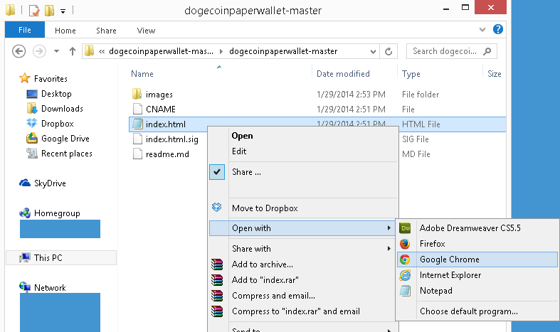
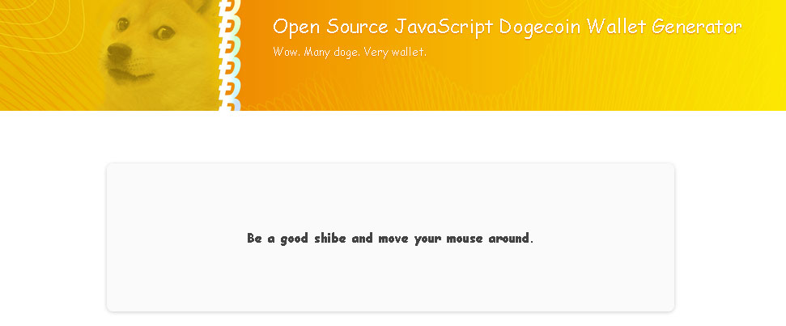
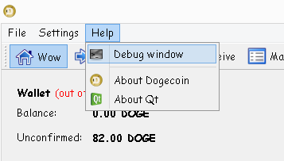
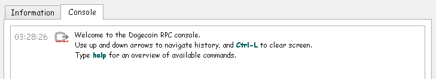
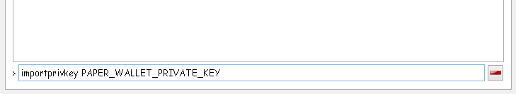

Paper wallets
Last updated on Jan 30, 2014
Paper wallets are identical in function as the local wallet software, except they have the added benefit of being physically transferable like cash. They are also one of the safest ways to store Doge if proper precautions are taken.
In general, creating a paper wallet consists of:
- generating a new wallet (private / public key pair) and printing it
- sending Doge to the newly created wallet
- withdrawing the entire paper amount when ready
Note: look at the local wallet section first if you are new to Dogecoin.
Generating and printing a new wallet
For this guide, we are going to use the most popular way of generating a paper wallet. First, go to Wells Riley's paper wallet generator (scroll down) and download the zip file. You can use the online version instead, but this way is less safe.
Learn more: how can I trust these downloads?
The linked Github is actually the source code for the paper wallet download. If you know how to read code, you can inspect everything yourself to ensure there is no malicious intent. They also provide a way to ensure the downloaded zip file matches the publicly visible source code in the "Wow. Very Security" section of the page.
If you downloaded the file, extract the zip and navigate to the folder. Within dogecoinpaperwallet-master, open "index.html" with your web browser.
Optional: for extra security, use a clean operating system that has no internet connection, such as an Ubuntu Live CD to unzip the file contents and open "index.html".
You will be asked to move your mouse around in the box. You must have Javascript enabled (in most cases, it will be enabled by default). This is used in the wallet generation process, so more random movement is better!
Follow the steps in the browser and you will have a paper wallet! The printing calibration is important to ensure the QR code is printed correctly. During this process, it generates a public key and a private key. Do not reveal the private key to anyone.
The public key is your deposit address, and the private key is used to redeem the entire balance. If someone finds out the private key, they can claim the entire balance on the wallet. This is why the wallet printout is designed to fold over and hide the private key.
Learn more: what is a QR code?
QR codes are similar to bar codes. A machine can scan them and receive information. In this case, the public key or private key. This allows a person with a QR code scanner to avoid having to manually type the keys in.
To read them, you may need to install a program onto your computer or phone. If you want to generate your own QR codes, an easy way to do this is to use the Wolfram Alpha website. For example: submitting "QR code: http://dogecointutorial.com" will generate a QR code containing that address.
Learn more: how is it possible to generate a key pair offline?
Every wallet consists of at least one public and private key pair. The public key is your receive address, and the private key is what you use to claim ownership of the public key. This is possible because the public key can be mathmatically calculated from the private key, but not the other way around. As a result, the block chain only needs to store the public key in each transaction.
Private keys themselves can be almost any 256 bit number, so the number of possible private keys is approximately 2 to the power of 256. This is a very large range, making it very very unlikely that a private key will ever be duplicated. The random mouse movement performed helps with this as well. Thus, even private keys generated offline can be treated as unique and does not have to be validated online first.
You can read more here.
Adding Doge to the paper wallet
While you now have a paper wallet, the balance is 0. To add Doge, simply send Doge to the paper wallet's public key as the address.
Tip: you can check what has been sent to the wallet by searching for transactions involving the public key here.

Redeeming a paper wallet
When you are ready to redeem the wallet, you reveal the private key on the paper wallet and enter it into your local wallet client. To do this, first, open the local wallet software.
Note: redeeming a paper wallet consumes the entire balance. You cannot opt to redeem only part of the wallet.
In the local wallet (dogecoin-qt), go to help > debug window
 debug window" />Select the console tab.
At the bottom, enter in "importprivkey PAPER_WALLET_PRIVATE_KEY", replacing PAPER_WALLET_PRIVATE_KEY with the paper wallet's private key.
Note: if you have encrypted your wallet, you must first unlock it. Enter walletpassphrase YOUR_PASSPHRASE TIMEOUT_NUMBER into the console, where YOUR_PASSPHRASE is your passphrase and SOME_NUMBER is a number representing a timeout value. For example, "walletpassphrase secretpassword 500". If you do not do this, you may get error -4 when you attempt to import the key.
It will take a moment to import everything, but you should be done!